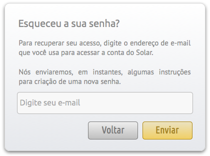

Acesso ao Sistema¶
Neste tutorial, apresentamos as opções:
Login¶
Caso o usuário já possua uma Login e senha cadastrada, basta inserir estes dados e clicar em Acessar. A próxima página apresentada será a Home do sistema.

Cadastro de usuário¶
Para se cadastrar basta clicar em Cadastrar. Na tela seguinte será solicitado o e-mail e o CPF do usuário.
- Inserir um CPF válido

- Inserir dados pessoais

- Inserir dados de acesso

- Inserir dados de contato

- Informar a instituição na qual você pertence

Depois de concluído o cadastro o usuário já pode entrar no sistema normalmente.
Recuperação de senha¶
Caso já tenha um usuário, mas perdeu a senha, basta clicar em Esqueceu a sua senha? na tela de Login. Na próxima tela será solicitado o e-mail cadastrado.
Será enviada uma mensagem de confirmação para o endereço de e-mail informado.
Após clicar no link para mudar a senha, a tela abaixo será apresentada solicitando a alteração da senha.

Saindo do sistema¶
Para sair do sistema basta clicar em Sair, na barra superior.
Após sair do sistema, será apresentada a mensagem Logout efetuado com sucesso na página de login.